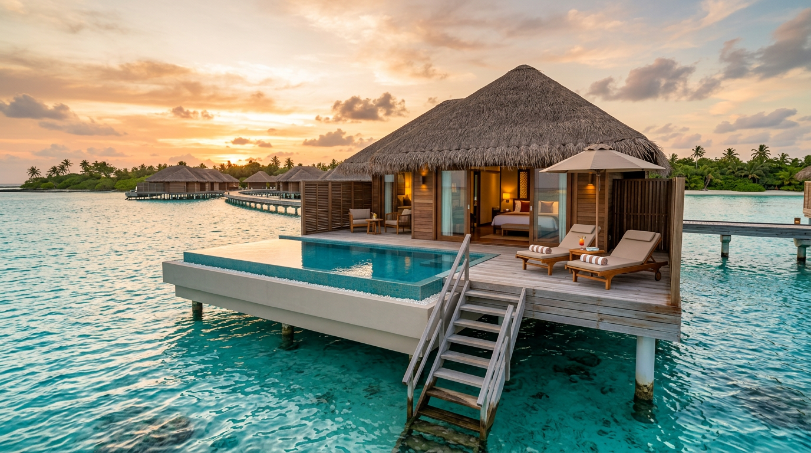
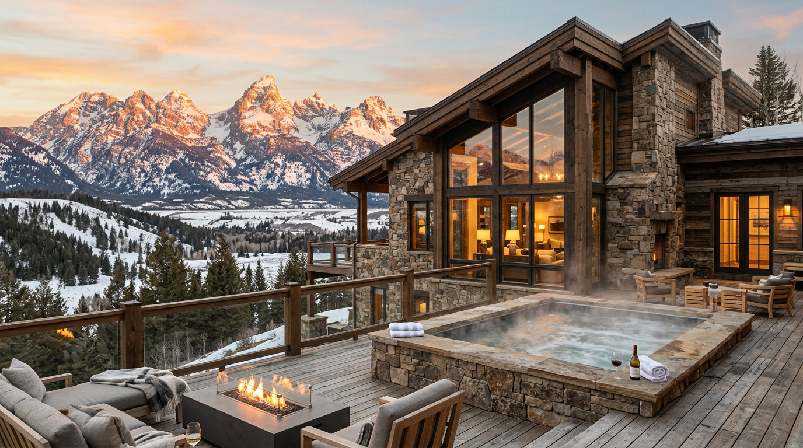

Every photograph on the site was viewed and compared with its label. This page shows what we propose to change, and what still needs a decision. It exists only on the preview and will be removed before anything goes live.
1. Proposed swaps
These photos showed a different place or subject from the caption beside them. Each proposed photo was viewed before being chosen. All are from Unsplash, the same source the site already uses.
Canadian Rockies
Caption: "Lake Louise, nature's masterpiece"
Before: Was a city skylineProposed
Canadian Rockies
Caption: "Where mountains meet sky"
Before: Was a forest seen from above, no mountainsProposed
Japan
Labelled "Sensoji Temple Tokyo"
Before: Was the torii gates of Fushimi Inari, KyotoProposed
Japan
Caption: "Kyoto's Arashiyama Bamboo Forest"
Before: Was a city at dusk, no bambooProposed
Paris & Beyond
Caption: "The dramatic Emerald Coast of Brittany"
Before: Was an unidentified sunset beachProposed
UK Spa Breaks
Labelled "Luxury spa pool"
Before: Was a woman doing sit-ups in a gymProposed
Family Safari Guide
Labelled "A leopard resting on a tree branch"
Before: Was a giraffeProposed
Family Summer Travel
Caption: "The Val d'Orcia"
Before: Was Park Guell in BarcelonaProposed
Multigenerational Travel
Caption: "The Cotswolds, England's golden countryside"
Before: Was an American suburban houseProposed
Where to Go in Spring
Caption: "The Douro Valley, terraced vineyards"
Before: Was a Lisbon tramProposed
Bali & Beyond
Caption: "Pura Ulun Danu Bratan"
Before: Was rice terraces. Swapped with the hero, which now shows the rice terracesProposed
Iceland
Caption: "Jokulsarlon glacier lagoon"
Before: Was a green river canyonProposed
Iceland
Caption: "The aurora borealis"
Before: Was a daytime beach with no auroraProposed
1b. Hotel cards using Little Emperors images
The first three hotel cards now use the image Little Emperors publishes for that hotel. The remaining cards in section 2 can follow the same way.
Amandari, Ubud
Hotel card on Bali & Beyond
Before: generic stock photoProposed: Little Emperors image of the hotel
Four Seasons Resort Bali at Sayan
Hotel card on Bali & Beyond
Before: generic stock photoProposed: Little Emperors image of the hotel
Bulgari Resort Bali
Hotel card on Bali & Beyond
Before: generic stock photoProposed: Little Emperors image of the hotel
2. Stock photos shown as named hotels
These are generic stock photos that appear on the card of a specific hotel. They are not photographs of that hotel. They need real images of each property, from Little Emperors or the hotel, and are unchanged for now.
Shown as: Four Seasons Landaa Giraavaru (Maldives)Shown as: Nihi Sumba Island (Bali Beyond)Shown as: Cheval Blanc Randheli (Maldives)Shown as: One&Only Reethi Rah (Maldives)Shown as: Maison Barrière Vendôme (Paris Beyond)Shown as: Hôtel Barrière Le Fouquet's Paris (Paris Beyond)Shown as: &Beyond Serengeti Under Canvas (Tanzania Safari)Shown as: Gleneagles, Scotland (Uk Spa Breaks)Shown as: Deplar Farm, Troll Peninsula (Iceland)Shown as: Estelle Manor (Multigenerational Travel)Shown as: Hotel & Spa des Gordes (Multigenerational Travel)Shown as: Hotel de Russie (Where To Go In Spring)Shown as: Four Seasons Kyoto (Where To Go In Spring)Shown as: Hotel Arts Barcelona (Where To Go In Spring). The photo is Park Guell.Shown as: Soneva Fushi (Maldives). Loaded from a travel blog.
3. Our own image files
These ten files live in the site's image folder. They look like generated images rather than photographs. Five are captioned as specific real hotels, which is a decision for us: a guest will not find this exact view when they arrive.

Shown as: Soneva Fushi overwater villa (Villas)Shown as: Hotel Cala di Volpe villa (Villas)

Shown as: Amangani Residences (Villas)Shown as: Grand Hotel Villa Serbelloni (Multigenerational Travel)Shown as: Kwandwe Private Game Reserve lodge (Multigenerational Travel)